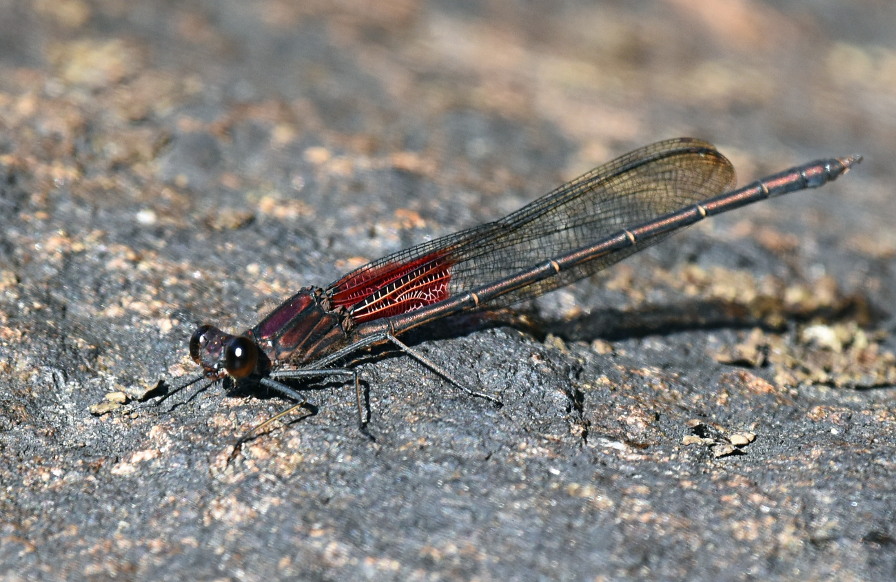

American Rubyspot
Hetaerina americana

American Rubyspot male (photo: your name / date)
Identification
- Large damselfly (body length ~38–50 mm, wingspan ~60–70 mm)
- Males: Slender metallic green-bronze or coppery body; wings with large, vivid ruby-red or rose-colored spots at the base (near the body) and clear outer half
- Females: Similar body but duller bronze; wings with smaller, smoky-amber or brown basal spots
- Distinctive fluttering, butterfly-like flight; often perches on rocks or vegetation with wings folded
- The red wing spots are unique among NB damselflies — no look-alikes
Habitat
Prefers larger, open rivers and streams with moderate to fast current, often with rocky or gravelly substrates and some emergent vegetation. Adults perch on rocks, logs, or overhanging branches near the water. Nymphs develop in the riverbed. In New Brunswick, found mainly along bigger waterways with good water quality.
Flight Season in NB
Late July to mid-October (earliest ~Aug 7, latest ~Oct 16 based on records). One of the latest-flying damselflies in the province, with peak activity in August–September.
Distribution & Notes
Local in New Brunswick, primarily along larger rivers in southern and central regions (e.g. Saint John River system). Not as widespread as jewelwings but conspicuous and unmistakable when present. Excellent indicator of clean, flowing water.
Similar Species
No close look-alikes in NB. The large ruby-red basal wing spots are diagnostic and unique among local damselflies. Superficially resembles some spreadwings or jewelwings from a distance, but much larger and with distinctive red markings.